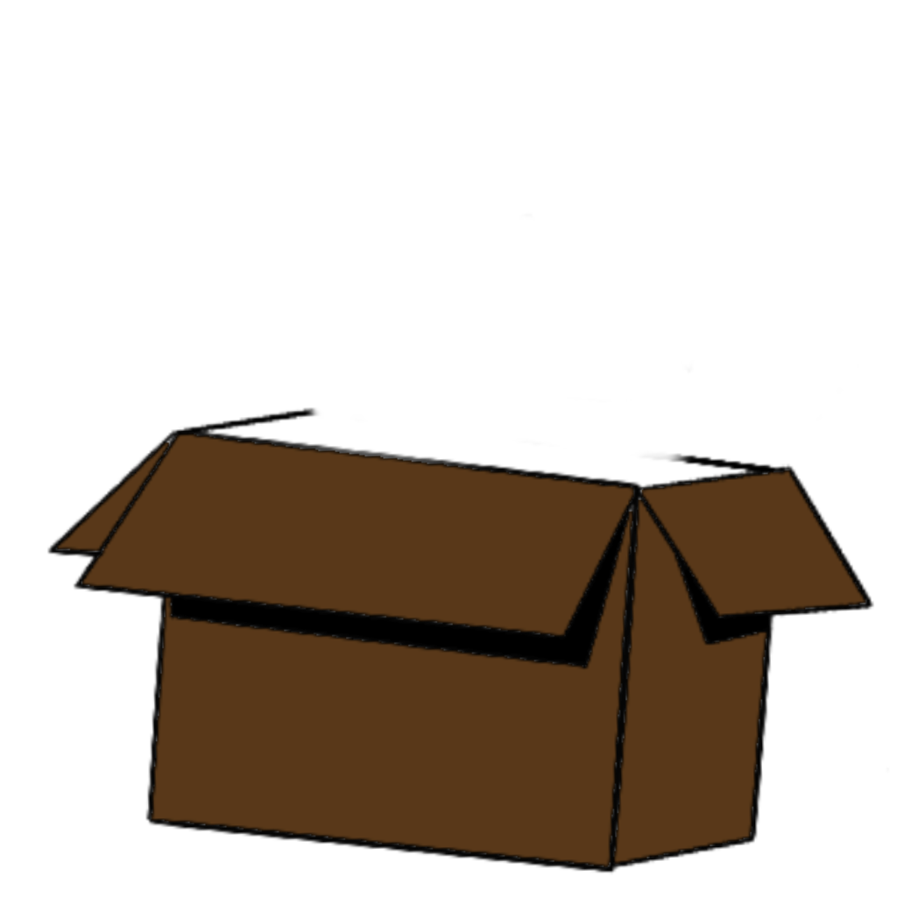
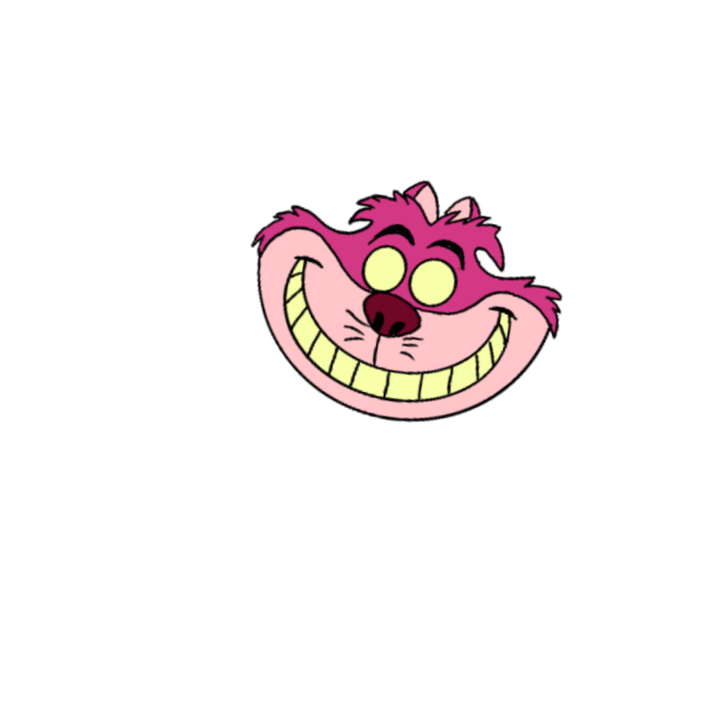

<!-- 
SNIPPET DE ANIMACIÓN REUTILIZABLE
================================
Copia este código donde necesites la animación.
Mantiene la escala y funcionalidad intacta.
-->

<!-- HTML Structure -->
<div class="scroll-animation-container">
    <div class="animation-wrapper">
        
        
        <div class="pupil-left"></div>
        <div class="pupil-right"></div>
    </div>
</div>

<!-- CSS Styles (incluir en tu hoja de estilos) -->
<style>
/* Contenedor principal del snippet */
.scroll-animation-container {
    position: sticky;
    top: 0;
    height: 100vh;
    display: flex;
    justify-content: center;
    align-items: center;
    overflow: hidden;
    z-index: 10;
}

/* Wrapper que mantiene la escala */
.scroll-animation-container .animation-wrapper {
    position: relative;
    width: 400px;
    height: 400px;
    transform-origin: center center;
    transition: transform 0.3s ease;
}

/* Responsive */
@media (max-width: 768px) {
    .scroll-animation-container .animation-wrapper {
        width: 300px;
        height: 300px;
    }
}

@media (max-width: 480px) {
    .scroll-animation-container .animation-wrapper {
        width: 250px;
        height: 250px;
    }
}

/* Imágenes base */
.scroll-animation-container img {
    position: absolute;
    max-width: 100%;
    height: auto;
    transition: all 0.6s cubic-bezier(0.4, 0, 0.2, 1);
}

.scroll-animation-container .box-image {
    width: 100%;
    top: 50%;
    left: 50%;
    transform: translate(-50%, -50%);
    z-index: 2;
}

.scroll-animation-container .head-image {
    width: 95%;
    top: 5%;
    left: 50%;
    transform: translate(-50%, 0);
    z-index: 1;
}

.scroll-animation-container .pupil-left,
.scroll-animation-container .pupil-right {
    width: 12px;
    height: 12px;
    background: #000;
    border-radius: 50%;
    z-index: 3;
    transition: all 0.1s ease-out;
    box-shadow: 0 0 3px rgba(0,0,0,0.3);
}

.scroll-animation-container .pupil-left {
    top: 18%;
    left: 43%;
    transform: translate(-50%, -50%);
}

.scroll-animation-container .pupil-right {
    top: 18%;
    left: 57%;
    transform: translate(-50%, -50%);
}

/* Estados animados */
.scroll-animation-container .animation-wrapper.scrolled .head-image {
    top: 75%;
    transform: translate(-50%, -50%) scale(1);
}

.scroll-animation-container .animation-wrapper.scrolled .pupil-left {
    top: 76%;
    left: 44%;
}

.scroll-animation-container .animation-wrapper.scrolled .pupil-right {
    top: 76%;
    left: 56%;
}

.scroll-animation-container .animation-wrapper.scrolled .box-image {
    transform: translate(-50%, -50%) scale(1.1);
}

/* Hover effects */
.scroll-animation-container .animation-wrapper:hover {
    transform: scale(1.05);
}
</style>

<!-- JavaScript (incluir en tu archivo JS o en script tag) -->
<script>
// Función para inicializar el snippet
function initScrollAnimationSnippet(containerSelector = '.scroll-animation-container') {
    const container = document.querySelector(containerSelector);
    if (!container) return null;
    
    const wrapper = container.querySelector('.animation-wrapper');
    if (!wrapper) return null;
    
    let scrollThreshold = 200;
    
    // Manejar scroll
    function handleScroll() {
        const scrollY = window.scrollY;
        const scrollProgress = Math.min(scrollY / scrollThreshold, 1);
        
        if (scrollProgress > 0.3) {
            wrapper.classList.add('scrolled');
        } else {
            wrapper.classList.remove('scrolled');
        }
    }
    
    // Seguimiento del mouse
    function followMouse(event) {
        const pupils = wrapper.querySelectorAll('.pupil-left, .pupil-right');
        
        pupils.forEach((pupil) => {
            const pupilRect = pupil.getBoundingClientRect();
            const pupilCenterX = pupilRect.left + pupilRect.width / 2;
            const pupilCenterY = pupilRect.top + pupilRect.height / 2;
            
            const deltaX = event.clientX - pupilCenterX;
            const deltaY = event.clientY - pupilCenterY;
            
            const distance = Math.sqrt(deltaX * deltaX + deltaY * deltaY);
            const maxDistance = 10;
            
            const moveX = (deltaX / distance) * Math.min(distance, maxDistance);
            const moveY = (deltaY / distance) * Math.min(distance, maxDistance);
            
            if (distance > 0) {
                pupil.style.transform = `translate(calc(-50% + ${moveX}px), calc(-50% + ${moveY}px))`;
            }
        });
    }
    
    // Event listeners
    let ticking = false;
    window.addEventListener('scroll', () => {
        if (!ticking) {
            requestAnimationFrame(() => {
                handleScroll();
                ticking = false;
            });
            ticking = true;
        }
    });
    
    document.addEventListener('mousemove', followMouse);
    
    // Intersection Observer para mejor rendimiento
    const observer = new IntersectionObserver((entries) => {
        entries.forEach(entry => {
            if (entry.isIntersecting) {
                handleScroll();
            }
        });
    }, { threshold: 0.1 });
    
    observer.observe(container);
    
    return {
        container,
        wrapper,
        reset: () => wrapper.classList.remove('scrolled'),
        setScrolled: (state) => {
            if (state) wrapper.classList.add('scrolled');
            else wrapper.classList.remove('scrolled');
        }
    };
}

// Auto-inicializar si existe el contenedor
document.addEventListener('DOMContentLoaded', () => {
    initScrollAnimationSnippet();
});
</script>

<!-- 
INSTRUCCIONES DE USO:
====================

1. Copia el HTML donde quieras la animación
2. Incluye el CSS en tu hoja de estilos
3. Incluye el JavaScript en tu archivo JS
4. Asegúrate de que las rutas de las imágenes sean correctas
5. La animación se activará automáticamente con el scroll

PERSONALIZACIÓN:
================

- Cambia las rutas de las imágenes en el HTML
- Modifica los tamaños en el CSS (.animation-wrapper width/height)
- Ajusta scrollThreshold en el JavaScript para cambiar cuándo se activa
- Personaliza las transiciones modificando los valores de transition

EJEMPLO DE USO PROGRAMÁTICO:
============================

// Inicializar manualmente
const animation = initScrollAnimationSnippet('.mi-contenedor-personalizado');

// Controlar manualmente
animation.setScrolled(true);  // Forzar estado scrolled
animation.reset();            // Resetear a estado inicial
-->
